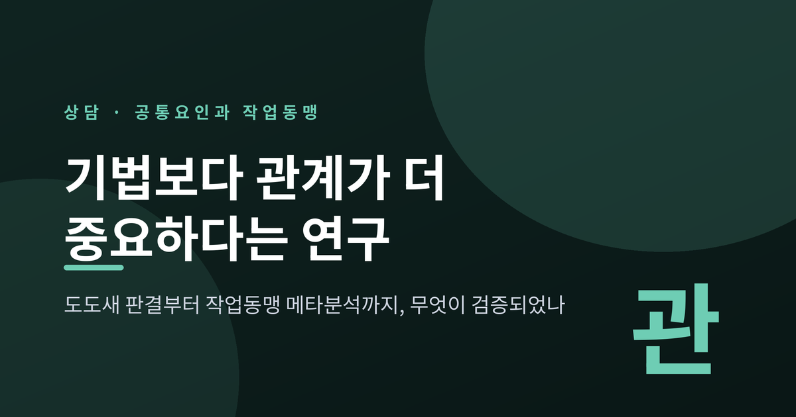
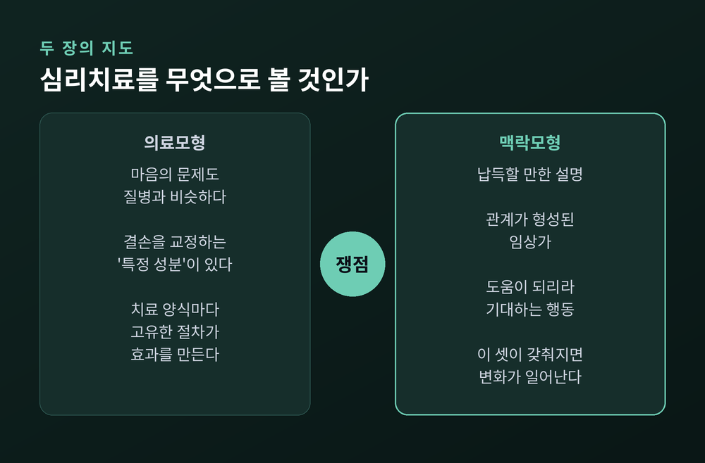
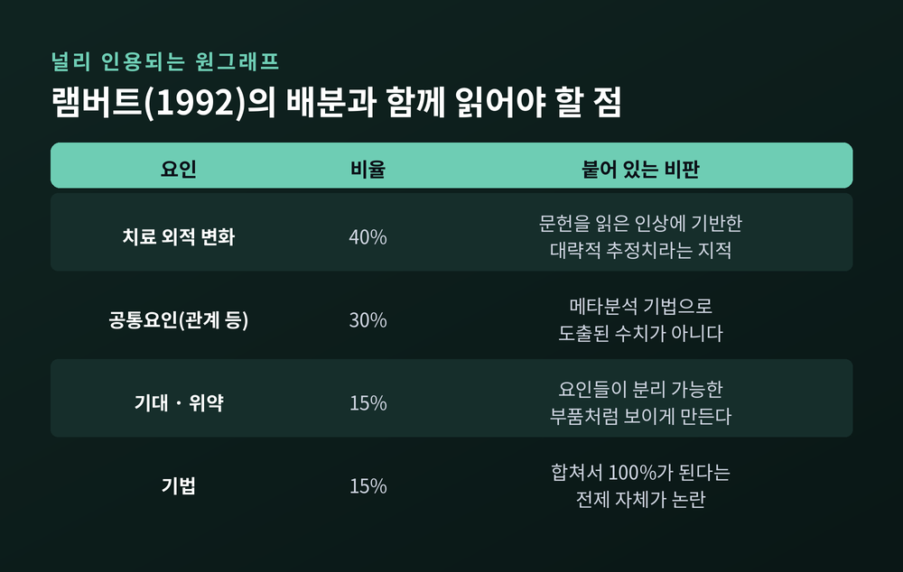
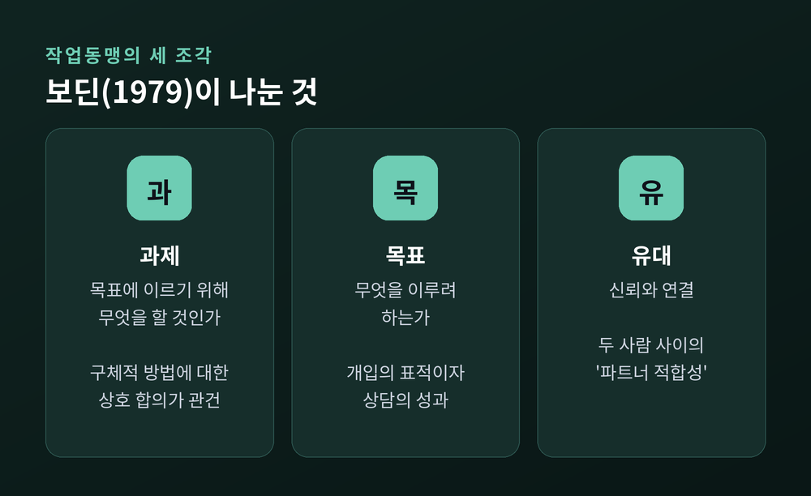
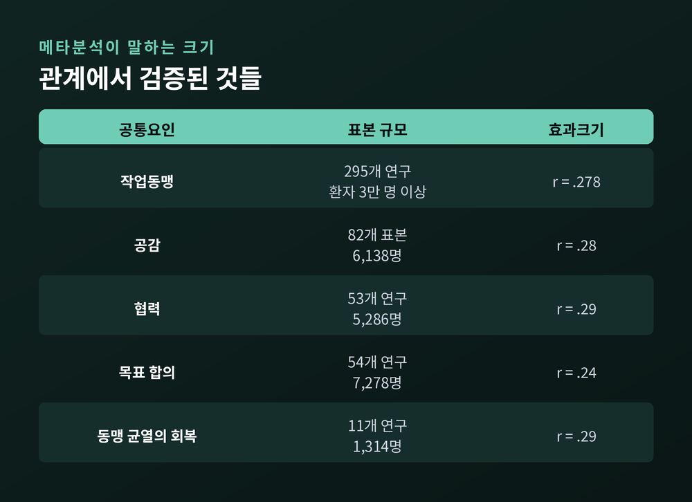
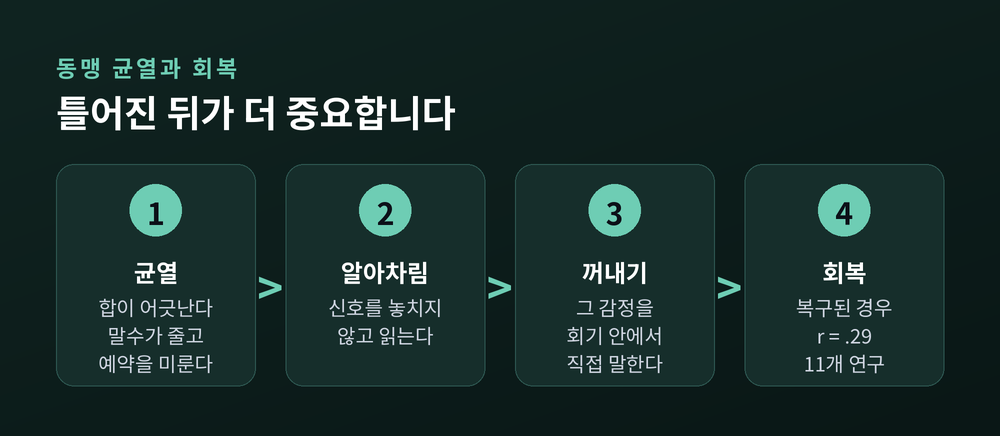

세 줄 요약
이번 글에서는 상담 효과의 공통요인과 작업동맹 연구를 정리해 보겠습니다. 90년 가까이 이어진 논쟁이라 결론부터 말씀드리는 편이 낫겠습니다. 관계가 중요하다는 근거는 튼튼합니다. 그러나 흔히 인용되는 숫자들 중 몇 개는 생각보다 허술합니다.
출발점은 1936년입니다.
사울 로젠츠바이크가 「다양한 심리치료 방법에 숨어 있는 공통요인들」이라는 논문을 냅니다. 여기서 그는 『이상한 나라의 앨리스』의 한 장면을 끌어옵니다. 경주가 끝나자 도도새가 이렇게 선언하는 대목입니다. "모두가 이겼으니 모두 상을 받아야 한다."
서로 다른 치료법의 성과가 대등하다는 이 주장은 이후 '도도새 판결'이라는 이름을 얻었습니다.
다만 짚어둘 것이 있습니다. 로젠츠바이크는 공통요인이 무엇인지 특정하지 않았습니다. '사회적 재조건화'와 '카타르시스' 정도를 예로 들었을 뿐입니다. 빈칸을 채우는 일은 후대의 몫으로 남았습니다.
그 작업은 오래 걸렸습니다. 1990년 그렌카베이지와 노크로스는 문헌을 훑어 공통요인 후보 89개를 추려냈습니다. 내담자 특성, 치료자 자질, 변화 과정, 치료 구조, 관계 요소. 이렇게 다섯 범주로 묶였습니다.
이 논쟁은 결국 심리치료를 무엇으로 볼 것인가의 문제입니다. 지도가 두 장 있습니다.
의료모형(medical model)은 이렇게 봅니다. 마음의 문제도 다른 질병과 비슷하다. 그러니 증상을 일으키는 특정한 결손을 교정하는 '특정 성분'을 갖춘 치료를 개발해야 한다. 이 관점에서 상담은 치료 양식마다 고유한 절차로 정의되는 기술적 개입입니다.
맥락모형(contextual model)은 다르게 봅니다. 브루스 웜폴드가 정리한 이 모형의 조건은 세 가지입니다. 내담자가 납득할 만한 설득력 있는 설명이 있을 것. 치료적 관계가 형성된 임상가가 진행할 것. 내담자가 도움이 되리라 기대하는 행동이 뒤따를 것. 이 셋이 갖춰지면 변화가 일어난다는 것입니다.
웜폴드는 변화가 흘러가는 경로를 세 갈래로 제시합니다.
2015년 『World Psychiatry』에 실린 그의 논문은 동맹·공감·기대·문화적 적응·치료자 간 차이에 관한 메타분석 근거를 모아, 공통요인이 심리치료의 이익을 만드는 데 중요하다고 결론 내립니다.

상담 공부를 하다 보면 반드시 만나는 그림이 있습니다. 마이클 램버트가 1992년에 제시한 배분표입니다.
| 요인 | 비율 |
|---|---|
| 치료 외적 변화 | 40% |
| 공통요인(관계 등) | 30% |
| 기대·위약 효과 | 15% |
| 기법 | 15% |
직관적이고 외우기 쉽습니다. "기법은 15%뿐"이라는 문장이 상담 현장에서 자주 인용되는 이유이기도 합니다.
그런데 이 숫자를 그대로 믿기는 어렵습니다. 세 가지 비판이 붙어 있습니다.
첫째, 경험적 근거가 약합니다. 이 백분율은 문헌을 읽은 인상에 기반한 대략적 추정치라는 지적이 있습니다. 제시된 수치를 뒷받침하는 직접적 증거는 없습니다.
둘째, 메타분석으로 오인되고 있습니다. 이 그림을 인용하는 사람들 상당수가 양적 종합 연구의 결과인 것처럼 다룹니다. 그러나 차트는 메타분석 기법으로 도출된 것이 아닙니다.
셋째, 개념 자체가 어색합니다. 요인들의 비중이 고정되어 있고 합치면 100%가 된다는 발상은, 서로 얽혀 있는 것들을 분리 가능한 이산적 부품처럼 보이게 만듭니다.
2019년 카위퍼르스와 동료들이 『Annual Review of Clinical Psychology』에 낸 개관은 더 조심스럽습니다. 모든 메타분석이 공통요인 모형을 지지하지는 않으며, 포함된 연구들에 방법론적 문제가 여럿 있다고 짚습니다. 한 메타분석에 들어간 16개 연구 중 비뚤림 위험이 낮은 것은 단 한 편이었습니다. 사회불안장애를 다룬 48개 연구 중에서는 17%만 그랬습니다.
이들의 결론은 이렇습니다. 지금까지의 문헌으로는 치료의 특정 구성요소가 필수 요소인지, 아니면 효과가 공통요인에서 나오는지 단정할 수 없습니다.

공통요인 중에서 가장 많이 연구된 것이 작업동맹입니다.
1979년 에드워드 보딘은 이 모호한 말을 셋으로 나눴습니다. 덕분에 동맹은 측정 가능한 개념이 되었습니다.
이 셋 중 하나만 어긋나도 동맹은 흔들립니다. 서로를 좋아하지만 무엇을 하려는지 합의되지 않은 관계가 있습니다. 목표는 또렷한데 그 방법이 내키지 않는 관계도 있습니다. 어느 쪽이든 작업은 겉돕니다.
보딘의 틀은 이론으로만 남지 않았습니다. 애덤 호바스가 만든 작업동맹 척도(WAI)가 바로 이 세 요소를 잽니다. 목표 합의, 과제 배분, 유대 형성. 이후 쏟아진 수백 편의 연구가 이 척도 위에 쌓였습니다.

숫자를 보겠습니다.
2018년 플뤼키거와 동료들이 발표한 메타분석이 현재 가장 큰 규모입니다. 1978년부터 2017년까지 나온 295개 독립 연구, 환자 3만 명 이상을 3수준 다층 모형으로 종합했습니다.
결과는 r = 0.278이었습니다. 95% 신뢰구간은 0.256에서 0.299 사이입니다.
교차 확인도 됩니다. 2011년 호바스와 동료들의 메타분석은 190개 독립 자료원, 1만 4천 건 이상의 치료를 다뤄 r = 0.275를 보고했습니다. 7년 사이 표본이 크게 늘었는데도 값은 거의 그대로였습니다.
이 상관은 평가자 관점이 바뀌어도, 측정 도구가 달라져도, 치료 접근과 환자 특성과 국가가 달라져도 일관되게 나타났습니다.
다만 이 숫자를 과장하지 않는 편이 정직합니다. 논문 자체가 밝혀둔 해석은 이렇습니다. 0.278이라는 효과크기는 동맹이 치료 성과 변량의 약 8%를 설명한다는 뜻입니다.
8%. 작아 보이실 수 있습니다. 그러나 심리치료 연구에서 이 정도 크기로, 이만큼 다양한 조건에서 꾸준히 재현되는 변인은 흔치 않습니다.
동맹이 좋으면 결과가 좋다. 여기까지는 자료가 말해줍니다.
동맹이 좋아서 결과가 좋아졌다. 이건 다른 주장입니다.
1990년 드루베이스와 필리는 반대 방향의 자료를 내놓았습니다. 치료적 동맹은 이후의 우울 증상 변화와는 상관이 없었고, 이전의 증상 변화와 상관이 있었다는 것입니다. 관계의 질이 호전의 원인이 아니라 결과일 수 있다는 뜻입니다. 증상이 나아지니 상담자가 좋아 보이는 것 아니냐는 지적입니다.
이후 여러 연구에서 초기 증상 호전을 통제하자 인지치료의 동맹–성과 연관이 유의하지 않게 나온 사례들이 보고되었습니다.
이 반론에 대해 플뤼키거 팀은 자기 자료로 답을 시도했습니다. 0차 상관과 편상관을 모두 보고한 66개 연구를 골라 비교한 것입니다. 전체 상관은 0.25, 초기 특성과 초기 증상 변화를 통제한 편상관은 0.22였습니다. 통계적으로 유의한 차이는 없었습니다.
그래도 논문은 선을 넘지 않습니다. 종단 예측으로 보면 동맹이 중간 정도의 인과적 촉진 요인이라 볼 근거가 있지만, 그것이 실험적 인과관계를 뜻하지는 않는다고 적습니다. "인과적 지위에 대한 물음은 중요하고 논쟁적이다." 원문의 표현입니다.
이유는 단순하고 결정적입니다. 사람을 '동맹이 좋은 조건'과 '동맹이 나쁜 조건'에 무작위로 배정하는 실험은 윤리적으로도 개념적으로도 불가능합니다. 그래서 이 분야의 인과 판단은 간접 증거에 기댈 수밖에 없습니다.
동맹만 연구된 것은 아닙니다. 2018년을 전후해 여러 메타분석이 한꺼번에 정리되었습니다.
작업동맹은 295개 연구 3만 명 이상에서 r = 0.278이었습니다. 공감은 82개 표본 6,138명에서 r = 0.28, 협력은 53개 연구 5,286명에서 r = 0.29, 목표 합의는 54개 연구 7,278명에서 r = 0.24, 동맹 균열의 회복은 11개 연구 1,314명에서 r = 0.29였습니다. 크기가 서로 비슷합니다.

공감 연구에는 흥미로운 세부가 있습니다. 엘리엇과 동료들의 분석에서 성과를 더 잘 예측한 것은 '공감 정확도'를 재는 측정치가 아니었습니다. 내담자와 관찰자, 치료자가 지각한 공감이 더 강한 예측력을 보였습니다. 정확히 맞히는 것보다, 이해받고 있다고 느껴지는 편이 중요했던 셈입니다.
미국심리학회 12분과와 29분과가 함께 꾸린 태스크포스는 이 근거들을 등급으로 나눴습니다.
태스크포스의 총론은 이렇습니다. 치료 관계는 특정 치료 유형과 독립적으로 성과에 실질적이고 일관된 기여를 하며, 내담자가 호전되는 이유를 최소한 특정 기법만큼은 설명한다. 그러면서 덧붙입니다. 관계를 빼놓고 '근거기반 실천'을 말하는 지침은 심각하게 불완전하고 오도할 수 있다고 말입니다.
여기서 자연스레 따라오는 질문이 있습니다. 같은 기법을 써도 사람에 따라 결과가 다른가.
치료자 효과(therapist effects)라 부르는 연구 주제입니다.
볼드윈과 이멀의 2013년 메타분석은 성과 변량 중 치료자가 설명하는 부분을 약 5~7%로 추정했습니다. 이후 체계적 개관에서도 평균 5% 안팎이 반복 확인되어, 현상 자체는 꽤 안정적으로 보입니다.
다만 범위는 넓습니다. 연구에 따라 0%에서 55%까지 벌어졌고, 전체적으로 3~15%로 보고되기도 합니다. 그러니 하나의 숫자로 못 박기는 어렵습니다.
한 가지 규칙성은 눈에 띕니다. 무작위 통제시험에서는 치료자 간 차이가 작게, 실제 임상 현장에서는 크게 나옵니다. 매뉴얼과 감독이 촘촘한 환경에서는 치료자 간 편차가 줄어든다는 뜻으로 읽힙니다.
관계 연구에서 가장 실용적인 대목은 따로 있습니다. 좋은 동맹을 만드는 법이 아니라, 나빠진 동맹을 다루는 법입니다.
상담에서 두 사람의 합이 어긋나는 순간을 동맹 균열(rupture)이라 부릅니다. 내담자가 말수를 줄이거나, 과제를 미루거나, 예약을 자꾸 옮기는 식으로 나타나기도 합니다. 드물지 않습니다.
2026년 『Journal of Clinical Psychology』에 실린 다층 메타분석은 균열과 성과의 연관을 r = −0.21로 보고했습니다. 균열이 있을수록 결과가 나빴다는 뜻입니다. 저자들의 표현은 절제되어 있습니다. "작지만 일관된 부적 연관." 분석에 들어간 것이 4편의 출판물, 301명분 자료라는 한계도 함께 밝혔습니다.
반대쪽 자료가 더 흥미롭습니다. 유뱅크스와 동료들의 메타분석에 따르면, 균열이 복구된 경우의 효과크기는 r = 0.29였습니다. 11개 연구, 1,314명 자료입니다.
두 숫자를 겹쳐 놓으면 그림이 보입니다. 틀어지는 것 자체는 위험 신호입니다. 그러나 틀어진 뒤에 회복되는 과정은 오히려 치료적 자원이 됩니다.

한 가지 일반적인 상황을 그려보겠습니다. 어떤 분이 상담자가 무심코 한 말에 서운함을 느낍니다. 말하지 않고 넘기면 다음 회기부터 말수가 줄어듭니다. 그 상태로 몇 주가 지나면 상담은 조용히 끝납니다. 반대로 그 서운함이 회기 안에서 다뤄지면, 관계에서 느끼는 감정을 안전하게 꺼내보는 연습 자체가 됩니다.
말하기 어려운 감정을 그 자리에서 말해보는 것. 상담이 다루려는 것과 그리 멀지 않습니다.
여기까지 읽으면 기법은 별것 아니라는 결론으로 기울기 쉽습니다. 그건 자료를 한쪽으로만 읽은 것입니다.
도도새 판결에는 만만치 않은 반론이 붙어 있습니다.
첫째, 비교 대상이 편중되었습니다. 치료법 간 차이가 없다는 결론을 낸 메타분석에서 비교된 연구의 상당수가 인지행동치료 계열끼리의 비교였다는 지적이 있습니다. 서로 비슷한 것들을 비교하면 차이가 작게 나오는 것은 당연합니다.
둘째, 치료자 숙련도와 치료 충실도, 내담자와의 적합성이 충분히 통제되지 않았습니다.
셋째, 특정 기법이 우세한 영역이 실제로 있습니다. 외상후스트레스장애에서는 노출 기반 치료가 가장 잘 작동하는 것으로 보입니다. 외상 기억을 직면하게 하는 접근이 불안관리 기술을 가르치는 접근보다 나은 결과를 보인 연구들이 있습니다. 강박장애에서는 노출 및 반응방지(ERP)가 오랫동안 표준 치료로 기술되어 왔습니다.
그러니 정확한 문장은 이렇게 됩니다. 관계는 거의 모든 상담에서 작동하는 바탕입니다. 그리고 어떤 문제에서는 그 바탕 위에 특정한 기법이 반드시 올라가야 합니다.
둘은 경쟁 관계가 아닙니다. 노출치료도 결국 두려운 것을 직면하자는 제안을 내담자가 받아들여야 시작됩니다. 그 수락은 관계에서 나옵니다.
이 글은 연구 동향을 정리한 것이며, 진단이나 처방을 대신하지 않습니다. 본문의 예시는 모두 일반적인 상황을 가정해 구성했습니다.
한 가지만 실용적으로 옮겨보겠습니다. 상담을 받고 계신다면, 지금 그 관계에서 세 가지를 점검해 보실 만합니다. 우리가 무엇을 목표로 하고 있는지 서로 알고 있는가. 지금 하는 작업이 그 목표와 연결된다고 느껴지는가. 불편한 말을 꺼낼 만큼 안전하다고 느끼는가.
셋 중 하나라도 아니라면, 그 이야기를 상담자에게 해보시길 권합니다. 연구가 말하는 바로는, 그 대화 자체가 상담의 중요한 국면입니다.
우울이나 불안이 일상을 흔들거나, 혼자 버텨온 시간이 길어지고 있다면, 정신건강의학과나 전문 상담기관에서 평가를 받아보시길 권합니다. 어떤 접근이 지금의 나에게 맞는지는 전문가와 함께 정하는 편이 안전합니다. 거주 지역의 정신건강복지센터에서도 상담 자원을 안내받으실 수 있습니다.
정리하면 이렇습니다.
예전에는 "어떤 치료법이 가장 좋은가"가 질문이었습니다. 지금은 "무엇이 공통으로 작동하는가"로 질문이 옮겨왔습니다. 옮겨온 자리에서 가장 크고 일관된 신호가 작업동맹이었습니다.
다만 그 신호의 크기는 성과 변량의 8% 남짓이고, 인과의 방향은 아직 논쟁 중이며, 널리 인용되는 원그래프는 메타분석이 아닙니다. 이 세 가지를 함께 말하지 않으면 정직한 요약이 되지 않습니다.
그럼에도 남는 문장은 하나입니다.
"기법은 관계 위에서만 전달됩니다."
좋은 기법을 고르는 일과 좋은 관계를 만드는 일 중 무엇이 먼저냐고 물으신다면, 순서를 나눌 문제가 아니라고 답하겠습니다.